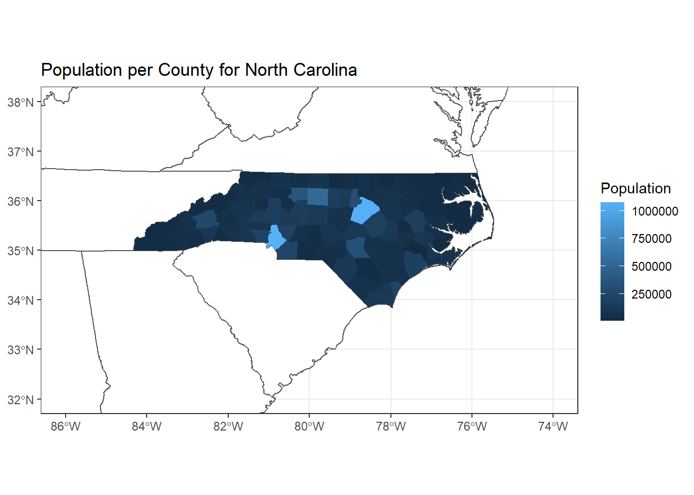

When we work with real-life data, it’s important to know how to both read data from our computer and write data from R Studio as a file. File management is an essential part of any workflow, especially as the scope and scale of analyses increases. Sometimes each file can be quite large – often several dozen or hundred megabytes or more – so it’s important to analyze data in a modular fashion (our computers have limited memory, disk space, processing power, and speed, after all). Fortunately, many tools exists within R and R Studio to make these tasks easier. In this R Module, you’ll learn some skills and R Packages that are frequently used to import and export data from your R environment.
Let’s go ahead and initialize a new R Project
(File > New Project...) and call it R Module
3.
Working in future R Modules, classes, and projects, you’ll need to be able to load, save, and share data. Fortunately, there are tools to load this data for almost any data type, from .csv’s to shapefiles, raster images, and many more. We’ll go over a couple of the most useful tools and packages used in data management to work with files in R.
In this lab, you’ll use a folder called data, which
contains a file called mtcars.csv. When working within R,
it’s important to know how to access files and folders. When you create
a project, the folder you set it up within is designated as your
working directory, which is a way of easily accessing
files for your project without writing the file’s full path. For
example, instead of accessing the file with
C:/Users/brownhr/Documents/R Module 3/data/example.file, if
you’re in the working directory “R Module 3” (which can be checked with
getwd()), you can simply type
data/example.file.
N.B. within R, it is very important to distinguish
between / and \; \ is called an
“escape character” and is used in more advanced text entry such as
Regex. If you want to enter a file path, use either
C:/Example/File/path or
C:\\Example\\File\\path; adding two backslashes is
necessary in this case.
readrThe readr package provides some excellent functionality
reading and writing data from and to files; while many of its functions
exist in base R, readr is markedly faster, and provides
more functionality for importing different types of data in a “tidy”
manner (“tidy” is a programming concept in R that we’ll get to later).
For more information about readr, visit https://readr.tidyverse.org
readr comes with functions that allow for easy
manipulation of primarily table-based data, such as .csv
and .tsv files, allowing us to work with data that we make
in Excel or Google Sheets. Especially when working with large files, or
large numbers of files, readr makes importing and exporting
data easy, and is much faster at reading and writing than the base
R functions.
sfSimple Features for R, or sf, is an R package that
allows for much easier geospatial analysis than older packages like
rgdal. sf works with “simple features” –
vector objects in GIS like points, lines, polygons, etc. – and stores
their “geometry” – their list of coordinates – as a column in a data
frame. This allows for geospatial data to be processed in exactly the
same way as non-spatial data; you can run functions and analyses on the
attribute table of a shapefile without needing to convert or export to
any intermediate formats, for example.
sf can work with shapefiles and other vector formats
made by ArcGIS Pro, QGIS, etc., so if you have a shapefile, you can
import it into R with read_sf(), perform your analysis, and
export any sort of spatial result with write_sf().
Even better, there’s compatability with ggplot2! Suppose
we have two shapefiles that we wish to map: NC_Counties and
US_States. Combining them is easy in
ggplot2:
# Load sf and the tidyverse, which contains packages like ggplot2 and dplyr
library(tidyverse)
library(sf)
# Read in the shapefiles with sf
US_States <- read_sf("data/US_States.shp")
NC_Counties <- read_sf("data/NC_Counties.shp")
# We can create a 'blank' ggplot object and define the data and mappings
# separately, which is useful if we have more than one input file or want to
# display more than one dataset.
ggplot() +
geom_sf(data = US_States, fill = "white") +
geom_sf(data = NC_Counties, aes(fill = Population), color = NA) +
coord_sf(xlim = c(-86, -74), ylim = c(32, 38)) +
theme_bw() +
labs(title = "Population per County for North Carolina")
Looks good so far! You’ll make a few maps of your own later in the
Module, so feel free to read more about how geom_sf() and
the other ggplot2 and sf functions work.
Read more about sf by going to https://r-spatial.github.io/sf/
Answer the following questions, and include them in your final document:
Within your data/ folder, open the file
NC_Counties.prj with a program like Notepad or
Notepad++.
.prj
file?For the US_States layer, the fill
argument stands on its own, while for NC_Counties, it’s
inside the aes() function. Why is this the case – what’s
the difference between these two layers?
What’s the purpose of the coord_sf() function? Use
?coord_sf() to view documentation and usage, and describe
its arguments.
Let’s go ahead and learn by example! Within your R Module 3 folder
(or wherever you initialized your R Project), copy over the
data folder. Set up an R Script called Task1.R
and enter the following:
library(readr)
data_path <- "data/mtcars.csv"
cars_data <- read_csv(file = data_path)## # A tibble: 32 x 11
## mpg cyl disp hp drat wt qsec vs am gear carb
## <dbl> <dbl> <dbl> <dbl> <dbl> <dbl> <dbl> <dbl> <dbl> <dbl> <dbl>
## 1 21 6 160 110 3.9 2.62 16.5 0 1 4 4
## 2 21 6 160 110 3.9 2.88 17.0 0 1 4 4
## 3 22.8 4 108 93 3.85 2.32 18.6 1 1 4 1
## 4 21.4 6 258 110 3.08 3.22 19.4 1 0 3 1
## 5 18.7 8 360 175 3.15 3.44 17.0 0 0 3 2
## 6 18.1 6 225 105 2.76 3.46 20.2 1 0 3 1
## 7 14.3 8 360 245 3.21 3.57 15.8 0 0 3 4
## 8 24.4 4 147. 62 3.69 3.19 20 1 0 4 2
## 9 22.8 4 141. 95 3.92 3.15 22.9 1 0 4 2
## 10 19.2 6 168. 123 3.92 3.44 18.3 1 0 4 4
## # ... with 22 more rows© 2022 brownhr. v.0.0.5